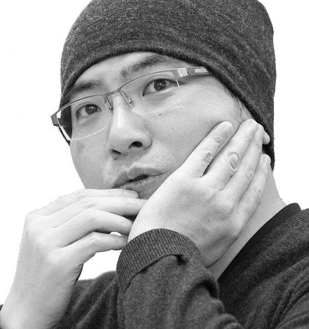

作者

みうらけんたろう
三浦建太郎
- 1966年7月11日千葉にて出生
- 日本大学藝術学部美術学科卒
- 2021年5月6日（54歳没）に死去
- 代表作はダーク・ファンタジー作品
『ベルセルク』 - 本名は非公表｡
経歴
日芸入学後、第34回少年マガジン新人漫画賞入選作となった『再び』（『週刊少年マガジン』1985年8月21日号_第36号掲載及び『NOA』（『フレッシュマガジン』1985年第3号掲載）で商業誌デビューを果たした。
両親は共にデザイナーであり、高校時代から漫画を描き続けていた三浦に対して理解を示していた。
音楽家の平沢進の熱狂的なファンで、執筆中には必ず聴いていたとのこと。これがきっかけでアニメ及びゲーム版『ベルセルク』の音楽は平沢が担当している（劇場版は主題歌のみ担当）。